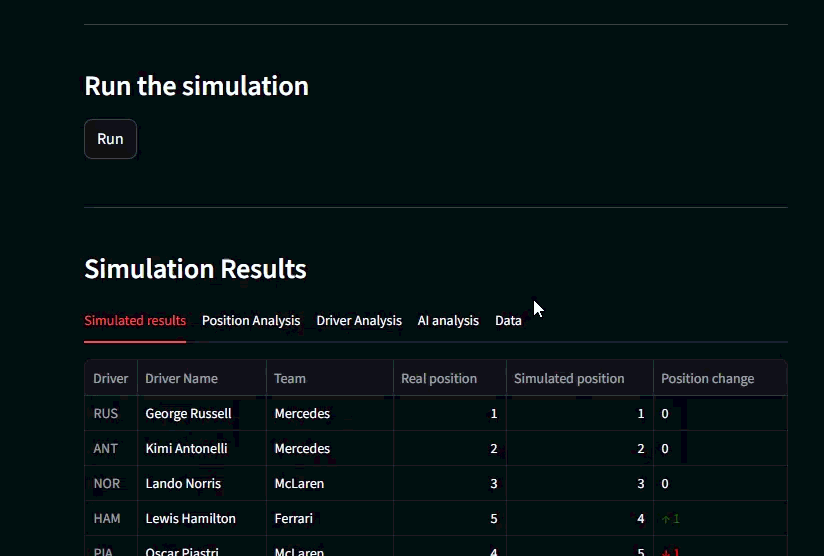
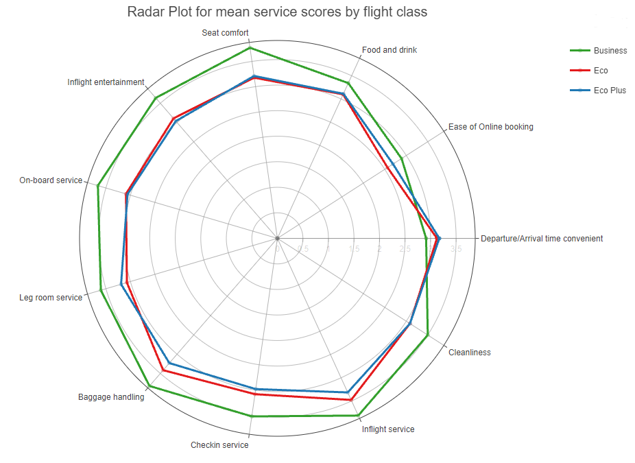
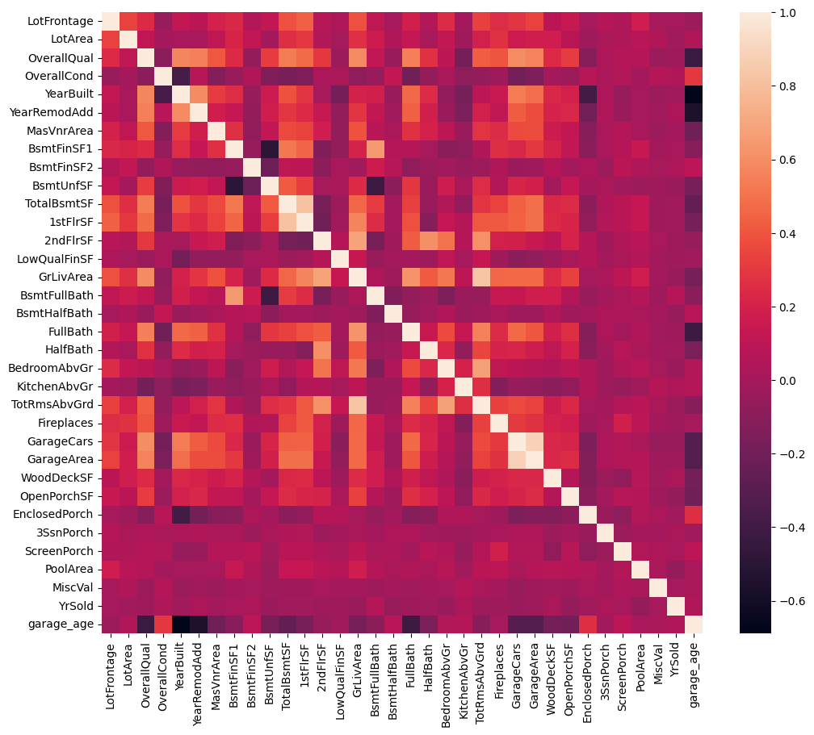
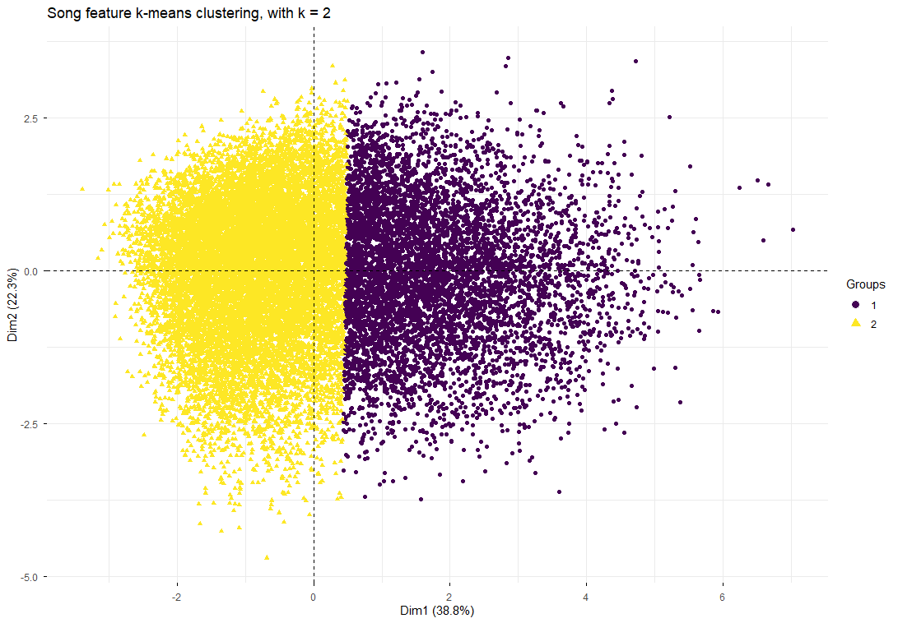

Data Scientist · Sheffield, UK
Data Science MSc student (expected Distinction, 2026) with a First-Class BSc in Mathematics. Experience building end-to-end ML pipelines in Python — from EDA and feature engineering through to model evaluation and deployment. PGCE-qualified with a proven ability to communicate complex concepts clearly to non-technical audiences.
I'm currently completing my MSc in Data Science at the University of Sheffield, where my dissertation focuses on time series imputation and forecasting under synthetic missingness mechanisms. My primary interests are statistical modelling, forecasting, simulation and applied machine learning, in particular where I can exploit my mathematical knowledge to produce practical results. Outside of data science, I can be found climbing in the Peak District or continuing to develop my winter mountaineering skills.
MSc Data Science
University of Sheffield
Sep 2025 – 2026
Expected DistinctionBSc Mathematics
The Open University
Oct 2021 – Jul 2024
First-Class HonoursPGCE Mathematics
University of Sheffield
Sep 2024 – Jul 2025
QTS AwardedAzure AI Fundamentals
Microsoft · AI-900
In progress
In Progress
Simulation · Deployment · LLM Integration
Monte Carlo simulation engine producing a full driver position probability matrix and probabilistically optimised qualifying results. Deployed as an interactive Streamlit app with an LLM chat interface for interpreting results.

Classification · Feature Engineering
End-to-end ML pipeline in KNIME — EDA through to a tuned Random Forest classifier. Identified key satisfaction drivers and surfaced hidden service quality gaps between flight classes.
91% Accuracy · 0.97 AUC
Regression · Kaggle Competition
Gradient boosting pipeline with substantial feature engineering. Compared LightGBM and XGBoost with Optuna hyperparameter optimisation across multiple tuning strategies.
Top 23% · RMSE 0.1265
Unsupervised Learning · NLP
K-means with PCA applied to 50+ years of Billboard chart data, revealing two distinct acoustic profiles. NLP techniques uncovered lyrical trends across eras.
MSc Dissertation
In Progress · 2026A benchmarking framework analysing bias-variance trade-offs in forecasting tasks arising from different imputation methods — Kalman smoothing, ARIMA, and LSTM — under synthetic missingness mechanisms (MCAR, MAR, MNAR).
May 2025 – Present
Maths Tutor
Tutorful / Private · Sheffield & Remote
One-to-one A Level, GCSE and KS3 tuition - translating complex quantitative concepts into tailored, accessible explanations, resulting in superior understanding and academic attainment for students.
May 2022 – Aug 2024
Sales Assistant
Sports Direct · Grantham, UK
Customer facing role requiring clear communication, teamwork and responsiveness. Awarded Frasers Champion in recognition of customer service excellence while managing footwear department.